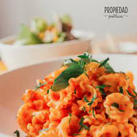

Menu
pasta carbonara

pasta pomodoro
pasta con vegetales

Restaurante italiano de ambiente encantador donde te ofrecemos el mejor servicio en una velada familiar, romántica o de amistad. Coordenadas Horario Propiedad Pública está abierto los miércoles y jueves a partir de las 19:00 hasta las 22:30; los viernes y sábados de 12:00 a 15:00 y en el horario nocturno; y los domingos sólo en el horario de mediodía. Dirección Propiedad Pública queda en la calle Enrique Peñaranda Bloque L, 29, frente a Cadillac. Redes El restaurante cuenta con un perfil en Facebook en donde se puede obtener y solicitar mayor información: www.facebook.com/Propiedad-Publica.
Esta ubicado en una de las zonas mas comerciales de la ciudad de La Paz, podras disfrutar de un ambientte calido, que te transportara directo a Italia. Te recomedamos tomar un vino de nuestra reserva especial. Después de 2011 regresó a Bolivia y trabajó en restaurantes como Gustu, Jardín de Asia y Red Monkey. Al conocer mejor el movimiento del mercado nacional, sus padres se animaron a ser los inversionistas del proyecto que Prudencio quería llevar adelante. La pasta y los ingredientes La chef indica que la idea es ofrecer comida italiana acompañada con ingredientes propios de Bolivia. Según el precepto "menos es más”, el menú que propone este nuevo restaurante prefirió ofrecer pocos platos, pero que representen una interesante variedad. "Tenemos una pasta de quinua sin gluten (...). Además, tenemos cosas nuevas como los gnudis, ravioles desnudos, con espinaca y albahaca. También ofrecemos mezzaluna, pappardelle y bucatini, todo acompañado con verduras”, detalla la chef paceña. Una de las especialidades de la casa es el ragú -un procedimiento en el que cocina la carne a fuego lento con otros ingredientes durante horas- de colita de res y cordero. La colita de res se acompaña con polenta, harina de maíz con quesos. Para el cocinero Edwin Aro, que se encarga del ragú, todo tiene que ver con el tiempo, la temperatura y la paciencia que requiere la preparación, ya que se persigue un objetivo concreto: ser absolutamente detallista. "Cada plato debe tener la misma esencia y delicadeza, y cada cliente debe recibir y saborear esa dedicación que en el caso del ragú toma horas de elaboración”, explica. En el restaurante también se elaboran sodas naturales, una marcada influencia de Red Monkey. Las bebidas de mandarina con menta, naranja con vainilla y canela, y limón con albahaca. A las preparaciones se inyecta dióxido de carbono, lo que hace que se conviertan en gaseosas.
Fue concebido como un espacio en donde comensales y trabajadores estén a gusto, un ambiente cálido en el cual la comida italiana es la protagonista. Su nombre es Propiedad Pública y es la iniciativa de la chef paceña Gabriela Prudencio, de 25 años. Ubicada en el corazón de San Miguel, zona Sur de La Paz, Propiedad Pública ofrece un espacio acogedor donde las fotografías de sus muros revelan parte de su concepto: un lugar abierto a todo aquel que disfrute de alimentos recién elaborados, un lugar para recibir a las personas como en casa. Las pastas frescas son uno de los atractivos principales además de los cócteles, un ámbito conocido por Prudencio que con su creación quinua colada llegó a ser finalista en la competencia Search for a cocktail star (Buscando a una estrella de la coctelería) impulsada por el chef británico Jamie Oliver.